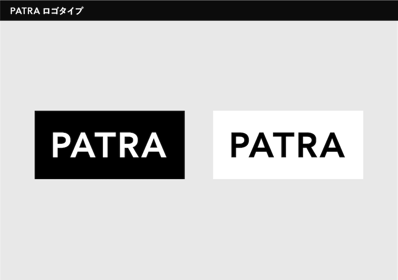
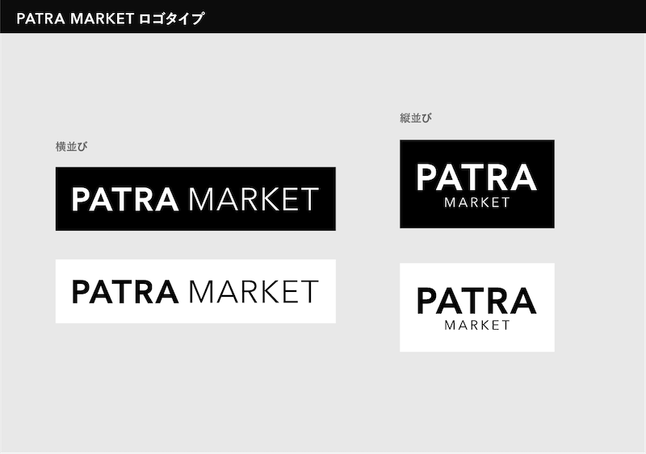
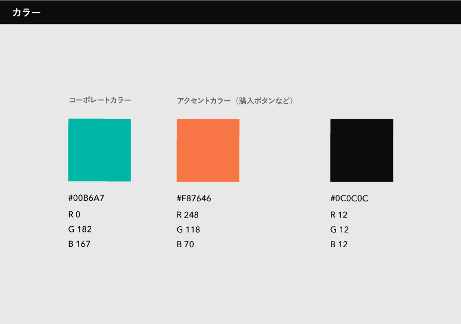
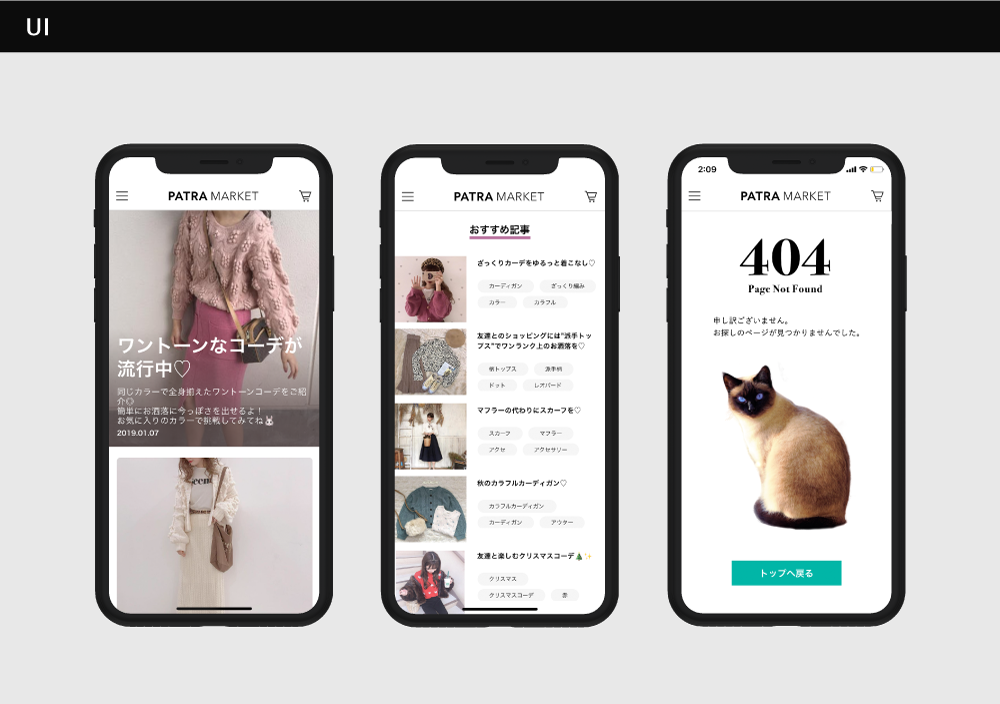

PATRA inc
Foodie / Logo / UI
2018.9 -
PATRA marketのロゴ、デザインガイドラインの作成、パーカーと記事UIのデザインを行いました。
ロゴはプラットホームらしくシンプルに、パーカーと記事のUIはユーザー(10代-20代前半女性)に寄り添ったデザインを意識しました。

ロゴタイプは、Avenir NextのDemi boldを元に製作しました。プラットホーム名として認知してもらえるようにシンプルなデザインを心がけました。
 PATRAとPATRA MARKETを白抜きと黒抜きで各2パターンずつ、計6パターン製作しました。
既存の商品とユーザーのinstagramに合う中性的なグリーンを、コーポレートカラーとして設定しました。
記事のUIと404画面のデザインをしました。
| CLIENT | PATRA inc |
| DESIGNER | fumiko yamamoto Shu Yamamichi |
その他の作品

まるはだかミュージアム
アイデア / AWARDS:博報堂サマーインターン最終課題準優勝

YUBISASHI
アイデア / AWARDS:博報堂 BRAND DESIGN CONTEST "BRANCO!" 東急電鉄部門優勝
株式会社助太刀
CORPORATE : sticker / water bottle / envelope / one cup / towel / noren / paper bag / web

助太刀
SURVISE : A4 flyer / LP(dev) × 2

MEDERU beaute
Package / Web
Portfolio
web design / coding

青二祭
logo / flyer / ticket / sticker / motion graphics